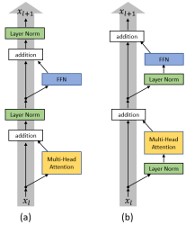

发展脉络
BatchNorm 适合批统计，LayerNorm 适合序列模型；RMSNorm、省偏置变体和 Pre-Norm 逐渐成为大模型默认，QK-Norm 又把稳定器推进注意力打分。
深到几十上百层的 Transformer，为什么没有像旧网络那样越深越训不动？归一化是藏在每一层内部的「稳定器」。这一节拆开 LayerNorm、RMSNorm，以及 Pre-Norm 与 Post-Norm 之争——它直接决定了你能不能把模型堆深，也决定了你的训练会不会在第三万步突然炸掉。
归一化做的事一句话：把每一层输出的数值「拉回」到一个稳定的范围，防止层层累加后数值爆炸或塌缩。就像合唱团里每个人都戴一只节拍器——哪怕某一层唱嗨了，下一层进来时音量先被校准回正常区间，再继续传下去。它不改变向量指向哪个方向，只改变向量有多长。
先说问题，再说解法。Transformer 的每一层都在做矩阵乘法和非线性变换，数值会在层间反复放大或缩小。假设每层把向量的平均模长放大 1.05 倍——经过 100 层，模长就膨胀到 $1.05^{100} \approx 131$ 倍。反过来，如果每层缩小 0.95 倍，100 层后只剩 $0.95^{100} \approx 0.006$，信号几乎消失。
这个 5% 的偏差看起来微不足道，但它是指数关系。工程上没有办法把每层的增益都精确控制在 1.000，权重在训练中一直在变，输入分布也一直在变。所以问题不是「能不能调准」，而是「必须有一个机制在每层入口强行归零这个累积误差」。这就是归一化存在的全部理由。
教科书上的经典说法叫内部协变量偏移（Internal Covariate Shift）：每一层的输入分布在训练过程中不断漂移，后面的层要不停适应一个「移动的靶子」，训练就变得困难。归一化的作用就是在每层之间插一个「校准点」，把数值拉回稳定区间，让后面的层面对的输入分布大致可控。
需要注意的是，「内部协变量偏移」这个原始解释后来受到了挑战——有研究通过控制实验指出，归一化真正起作用的原因更可能是它平滑了损失函数的地形（loss landscape），让梯度的方向更可靠、允许用更大的学习率，而不是因为消除了分布漂移。但无论理论解释如何演变，归一化在工程上的效果是确凿的：没有它，几十层以上的网络几乎训不动。这也是深度学习里很常见的情况——技巧先被实践确认有效，理论解释再慢慢追上来。
BatchNorm 在 CNN 时代大放异彩，但到了序列模型上水土不服——不同序列长度、不同 batch 之间的统计量差异太大，而且推理时 batch 大小可能是 1，跟训练时的统计量对不上。Transformer 选用的是 Layer Normalization（层归一化），思路是：对每个样本的每个位置独立做归一化，沿着特征维度算均值和方差。
给定一个隐藏层输出 $\mathbf{x} \in \mathbb{R}^d$，LayerNorm 的公式是：
其中 $\mu = \frac{1}{d}\sum_{i=1}^d x_i$ 是特征维度的均值，$\sigma^2 = \frac{1}{d}\sum_{i=1}^d (x_i - \mu)^2$ 是方差，$\epsilon$ 是一个小常数防止除零（典型取 $10^{-5}$ 或 $10^{-6}$）。$\gamma$ 和 $\beta$ 是可学习的缩放和偏移参数，各 $d$ 维，让模型自己决定归一化后的「标准范围」长什么样——否则强行把每层都压成标准正态，反而限制了表达能力。
把一批数据想象成一个 $(\text{batch}, n, d)$ 的三维张量，「归一化」的区别本质上就是沿哪根轴计算统计量。这是所有归一化方法最根本的分类依据：
| 方法 | 统计量沿哪根轴算 | 推理时依赖 batch 吗 | 变长序列友好吗 | 主要战场 |
|---|---|---|---|---|
| BatchNorm | 沿 batch 维（同一个特征位置，跨所有样本） | 依赖，需维护移动平均统计量 | 不友好，padding 会污染统计量 | CNN、视觉 |
| LayerNorm | 沿 特征维 $d$（同一个 token，跨它自己的所有通道） | 不依赖，每个样本自给自足 | 友好，与序列长度无关 | Transformer、RNN |
| RMSNorm | 沿 特征维 $d$，但只算平方均值不算均值 | 不依赖 | 友好 | 现代大模型 |
dim 参数写错——而这个 bug 特别隐蔽，因为代码照样能跑、形状照样对，只是模型永远训不好。PyTorch 里 LayerNorm 归一化的是最后若干维，RMSNorm 同理，写实现时永远用 dim=-1。
抽象公式不如一个四维向量来得直观。取 $\mathbf{x} = [2.0,\ -1.0,\ 3.0,\ 0.0]$，令 $\gamma = 1$、$\beta = 0$、忽略 $\epsilon$：
| 分量 | 原始 $x$ | LayerNorm 输出 | RMSNorm 输出 |
|---|---|---|---|
| $x_1$ | 2.0 | 0.6325 | 1.0690 |
| $x_2$ | −1.0 | −1.2649 | −0.5345 |
| $x_3$ | 3.0 | 1.2649 | 1.6036 |
| $x_4$ | 0.0 | −0.6325 | 0.0000 |
| 输出均值 | 1.0 | 0（严格） | 约 0.53（不为零） |
| 输出均方根 | 1.87 | 1 | 1 |
这张表把两者的差别说得很清楚：两种方法都把向量的「长度」标准化到了 1，区别只在于 LayerNorm 额外把「重心」挪到了原点，而 RMSNorm 没有。注意第四行——原始的 0 在 LayerNorm 下变成了 $-0.6325$（因为整体被平移了），在 RMSNorm 下仍然是 0。也就是说 RMSNorm 保留了「零就是零」这个性质，只做纯缩放。至于这个平移到底有没有用，就是下一节的主题。
归一化放在子层（注意力或 FFN）的前面还是后面，看似只是换个位置，却深刻影响了深层网络的可训练性。这是 Transformer 设计中最持久、也最有实际后果的架构争议。
Post-Norm（原始 Transformer 论文的做法）是先做子层运算和残差相加，再对结果归一化，公式为 $\mathbf{y} = \text{LayerNorm}(\mathbf{x} + \text{SubLayer}(\mathbf{x}))$。问题在于：当网络很深时，残差通路上的信号要反复经过 LayerNorm 的除法操作，梯度在反向传播时会被反复缩放，深层极易出现梯度消失或爆炸。原版 Transformer 靠精心设计的 warmup 学习率策略才训得动，一旦深度上去就极不稳定。
Pre-Norm 把归一化挪到子层之前：$\mathbf{y} = \mathbf{x} + \text{SubLayer}(\text{LayerNorm}(\mathbf{x}))$。关键区别在于——主残差通路（那个直接加的 $\mathbf{x}$）上不再有 LayerNorm 的除法，梯度可以从最后一层一路无障碍地流回第一层。这就像高速公路上撤掉了所有收费站，车流自然通畅。Pre-Norm 让 GPT-2 之后动辄几十上百层的模型成为可能。
上面这套说法是结论，第一手证据长什么样？2020 年 Xiong 等人的论文《On Layer Normalization in the Transformer Architecture》专门研究「归一化到底该放哪」这个问题，它的 Figure 1 把 Post-LN 和 Pre-LN 两种 Transformer 层并排画在一起，是理解这个架构决策最经典的权威图。下面这张就是论文原图（外链自 arXiv 的 ar5iv 版本）。

逐块读这张图。左边是 (a) Post-LN：每个子层（Multi-Head Attention 或 FFN）先做自己的运算，结果与残差输入相加，之后才经过 LayerNorm——注意图里 LayerNorm 的位置在残差相加之后，也就是说它拦在了残差通路上。右边是 (b) Pre-LN：LayerNorm 被挪到了子层之前，先对输入做归一化再送进子层，残差相加发生在子层之外——残差通路上没有 LayerNorm 的除法。再仔细看 Pre-LN 那一列，整列的最上方还多了一个 LayerNorm：这就是前面提过的 Final Norm，因为 Pre-LN 的残差主通路从头到尾没被归一化过，需要在进入输出头之前补一次「末层校准」。
这张图最值钱的对比点只有一处：归一化是不是被「关在」子层内部。Post-LN 把归一化放在残差相加之后，等于在直通通道上加了一道除法；Pre-LN 把归一化放在子层入口，残差通路保持干净。配合上一节的导数推导看，就是「恒等项在最外层」与「恒等项被包在归一化里面」的差别——一个能堆上百层，一个只靠 warmup 勉强维持浅层。论文用 IWSLT14 / WMT14 的翻译实验证明：Pre-LN 不需要 warmup 也能稳定收敛，而且收敛更快。这就是后来所有大模型默认 Pre-Norm 的实证依据。
一次真实的排查过程：某个 Pre-Norm 架构的模型在训练时 loss 一切正常，但部署后生成质量明显下滑——输出高度重复、几乎不采样，像是「被冻住」了。反复检查解码参数没问题，最后打印了 logits 才发现根因：最后一层 Block 的输出没有经过任何归一化就直接进了 LM Head。
原因要回到 Pre-Norm 的性质上：残差主通路上的数值从不被归一化，随着深度增加，深层输出的 RMS 会越滚越大。没有 Final Norm 做最后一次校准，进 LM Head 的 logits 幅度异常大，softmax 在巨大输入下会变得极其尖锐，近似 one-hot——于是采样几乎总选中同一个 token，输出就成了复读机。
排查口诀：先打印「最后一层输出的 RMS」和「logits 的最大绝对值」。RMS 明显大于浅层、logits 超过几十的量级，基本就是缺 Final Norm。修法也简单：在 LM Head 之前补一个 LayerNorm（或 RMSNorm），一般情况下一行代码就能解决。这个坑的普遍性在于——Pre-Norm 架构把「末层校准」从结构里隐去了，但模型的输出质量依然依赖它，所以它常被漏掉，也常被漏掉后难以察觉。
| 维度 | Post-Norm | Pre-Norm |
|---|---|---|
| 公式 | $\text{LN}(x + \text{Sub}(x))$ | $x + \text{Sub}(\text{LN}(x))$ |
| 残差通路 | 有归一化阻断 | 干净直通，无阻断 |
| 深层可训练性 | 差，需 warmup 护航 | 好，几十上百层无压力 |
| 是否需要 warmup | 基本必须 | 可省，通常仍保留一小段 |
| 末层输出幅度 | 被最后一次 LN 自动约束 | 可能漂移，需额外补 Final Norm |
| 最终性能上限 | 有研究指出在同等深度下可能略优 | 主流选择，工程友好 |
| 使用者 | 原版 Transformer、BERT | GPT-2 之后几乎所有大模型 |
把两种写法各自对输入求导，差别一目了然。先看 Pre-Norm：
那个 $I$ 是加在外面的。无论后面那一项多小，整体至少是恒等映射，$L$ 层连乘起来每个因子都含 $I$，梯度不会指数衰减。
再看 Post-Norm：
这里的 $I$ 被乘在里面了——外面还套着一个 $\partial \text{LN}/\partial u$。而 LayerNorm 的雅可比大致相当于「除以当前的标准差」，当激活幅度随层数累积变大时，这个因子会小于 1。$L$ 层连乘之后，$\prod_l \frac{\partial \text{LN}_l}{\partial u_l}$ 就成了一个指数衰减项，把外面的 $I$ 带来的好处一点点吃掉。
一句话总结这两个式子的差别：Pre-Norm 是「恒等项在最外层」，Post-Norm 是「恒等项被包在归一化里面」。这个位置差异，就是能堆 12 层还是能堆 120 层的分水岭。同样的道理在 残差连接与深层稳定 一节里会从另一个角度再讲一遍。
LayerNorm 虽好，但它要同时算均值 $\mu$ 和方差 $\sigma^2$，意味着对每个 token 的 $d$ 维向量要做两遍归约（先扫一遍求和算均值，再扫一遍求平方差算方差）。当模型维度做到 4096、8192 甚至更大，而这个操作在每层要执行两次、模型有上百层时，这部分开销就不再可以忽略——尤其它是典型的访存密集型操作，算得少但读写多，在 GPU 上很容易成为流水线里的小气泡。
2019 年提出的 RMSNorm（Root Mean Square Normalization），核心想法是：既然大量实验表明 LayerNorm 的均值偏移项（减均值）贡献不大，那干脆只保留缩放部分——用均方根（RMS）代替均值加方差：
对比 LayerNorm，RMSNorm 省去了减均值这一步（不计算 $\mu$，也不减去它），只做缩放归一化，$\beta$ 偏移项通常也一并省去。原论文报告的运行时间下降幅度约为 7% 到 64%（取决于任务、维度与实现），而模型质量基本持平。
| 特性 | LayerNorm | RMSNorm |
|---|---|---|
| 统计量 | 均值 $\mu$ + 方差 $\sigma^2$ | 均方根 RMS |
| 归约次数 | 两遍 | 一遍 |
| 可学习参数 | $\gamma$（缩放）+ $\beta$（偏移），共 $2d$ | $\gamma$（缩放），共 $d$ |
| 是否平移分布 | 是，输出均值严格为 0 | 否，只缩放不平移 |
| 计算量 | 较高 | 较低 |
| 效果差异 | 基准 | 大量实验表明与 LayerNorm 基本持平 |
| 使用者 | BERT、GPT-2 | Llama、Qwen、DeepSeek、Mistral |
2023 年之后的主流大模型——Llama 系列、Qwen 系列、DeepSeek 系列、Mistral——几乎清一色采用 RMSNorm + Pre-Norm 的组合。这不是巧合，而是「够用、够快、够稳」的工程最优解。省下来的那点计算量乘以千亿参数、万亿 token，就是实打实的训练成本节约。
import torch
import torch.nn as nn
class RMSNorm(nn.Module):
def __init__(self, dim, eps=1e-6):
super().__init__()
self.eps = eps
self.weight = nn.Parameter(torch.ones(dim)) # 只有 gamma，没有 beta
def forward(self, x):
# x 形状: (batch, seq_len, dim)
# 关键：统计量在 float32 下计算，避免低精度下溢
dtype = x.dtype
xf = x.float()
rms = torch.rsqrt(xf.pow(2).mean(dim=-1, keepdim=True) + self.eps)
return self.weight * (xf * rms).to(dtype)
# 数值对照：亲手验证上文那张表
x = torch.tensor([2.0, -1.0, 3.0, 0.0])
ln = torch.nn.functional.layer_norm(x, (4,), eps=0.0)
rn = x * torch.rsqrt(x.pow(2).mean() + 0.0)
print("LayerNorm:", ln) # 均值为 0，均方根为 1
print("RMSNorm :", rn) # 均值不为 0，均方根为 1
print("LN 均值:", ln.mean().item(), " RMS 均值:", rn.mean().item())对比 nn.LayerNorm，这里没有 mean 的减法，也没有 bias 参数，kernel 更容易与相邻算子做融合。实现上有两个细节值得记住：
rsqrt 而不是先 sqrt 再做除法。倒数平方根在 GPU 上有专门的快速指令，且省掉一次除法。.float() 这一行的原因。另外注意 $\epsilon$ 的位置：它必须加在平方均值上、开根号之前（$\sqrt{\text{mean}(x^2) + \epsilon}$），而不是加在根号外面。位置写错在正常数值下几乎看不出差别，但当激活接近 0 时会导致梯度异常——这是一类非常难查的 bug。
归一化不是孤立的设计——它和残差连接、激活函数、模型深度共同决定了训练的稳定性。一个常被忽略的事实是：同样的归一化算子，放在 Pre 还是 Post 位置，效果天差地别，而 Final Norm、QK-Norm 这些「额外补丁」又是在 Pre-Norm 成为主流之后才被逐步发现的。换句话说，归一化的最佳实践不是「选哪个公式」，而是「公式 + 位置 + 配套初始化」的一整套组合。下面几条是工程里反复验证过的经验：
上面提到的几种「位置」并不是互斥的，现代大模型常常同时用多个。把它们列成一张表，方便对照你读到的某个 config.json 到底做了哪些：
| 归一化点 | 位置 | 作用 | 缺了会怎样 |
|---|---|---|---|
| 子层前 Norm | 每个注意力 / FFN 子层入口 | Pre-Norm 的核心，保证残差通路干净无阻断 | 深层直接训不动 |
| Final Norm | 最后一层 Block 输出之后、LM Head 之前 | 对未归一化的残差通路做最后一次校准 | logits 幅度漂移，生成退化 |
| QK-Norm | 注意力 Q、K 投影之后、打分之前 | 防止分数过大导致 softmax 尖锐、训练不稳 | 深层模型更易出现 loss spike |
| 嵌入后 Norm | 词嵌入加位置编码之后、进入第一层之前 | 统一入口数值尺度，部分模型采用 | 影响有限，多数模型不加 |
读这张时序图时要抓住一点：归一化永远出现在子层「之内、之前」，而残差直连永远在子层「之外、之后」。二者一个向内整理、一个向外保底，分工互不干扰。这也是为什么 Pre-Norm 能堆深——归一化的除法被关在子层内部，残差那条直通路从头到尾没有任何缩放。反过来，Post-Norm 把归一化挪到了残差相加之后，等于在直通路上加了一道除法，深度一大就出问题。所以当你拿到一个陌生模型的配置，第一件事就是确认它用的是 Pre 还是 Post，这几乎决定了你能不能放心地把它堆到几十层以上。
前面讲的都是「为什么这样设计」，这一节讲「什么时候会出事」。归一化相关的故障有个共同特点：代码能跑、形状全对、报错没有，只是模型训不好或者训到一半突然炸。所以必须靠现象反推原因。
| 现象 | 可能原因 | 怎么确认 | 怎么处理 |
|---|---|---|---|
| 训练前几百步 loss 就发散 | Post-Norm 结构没配 warmup；或残差分支初始化过大 | 关掉深度只留 2 层试跑，若稳定则是深度相关问题 | 换 Pre-Norm，或加 warmup 与残差缩放 |
| 训到中途突然 loss spike 且回不来 | 某层激活幅度失控，注意力分数过大导致 softmax 饱和 | 打点记录各层激活的最大绝对值与 RMS，看是否有单层持续攀升 | 加 QK-Norm、下调学习率、检查该层是否有异常样本触发 |
| 低精度训练下 Norm 输出出现 NaN | 在 FP16 / BF16 里直接算 $x^2$ 的均值，溢出或下溢 | 把统计量强制转 float32 再跑一次，NaN 若消失即可确认 | 统计量恒用 float32 计算，最后再转回原 dtype |
| 生成结果高度重复、几乎不采样 | Pre-Norm 架构漏了 Final Norm，logits 幅度过大 | 打印最后一层输出的 RMS 与 logits 的最大值 | 在 LM Head 之前补一个 Final Norm |
| 模型能收敛但明显比同配置差 | 归一化的 dim 写错，沿 batch 维而非特征维归一 | 拿一条样本单独跑，看输出是否随 batch 内其他样本变化 | 改成 dim=-1，重新训练 |
rsqrt；归一化沿 dim=-1。本章逐件拆开 Transformer：注意力、因果掩码、位置编码、归一化、前馈网络和残差连接，并说明它们如何组成 decoder-only LLM。
阅读提示：读架构图时始终追踪三条信息流：token 表示、位置关系和残差主干；任何变体都可以放回这三条流里比较。
注意力和 Encoder–Decoder Transformer 的原始定义，适合作为公式与架构的基线。
将原论文逐行翻译成 PyTorch 实现，适合把 Q/K/V、mask、残差和学习率调度对应到代码。
说明 SDPA 的数学定义、mask 语义与后端选择，是核对实际 API 行为的权威入口。
RoPE 的原始论文，重点理解旋转后内积为何自然携带相对位置信息。
RMSNorm 的来源和计算简化，帮助比较 LayerNorm、RMSNorm 以及 Pre-Norm 结构。
资料优先选用原始论文、官方文档、大学课程和公共机构材料；链接按 2026-08-10 检索，具体版本以来源页面为准。
BatchNorm 适合批统计，LayerNorm 适合序列模型；RMSNorm、省偏置变体和 Pre-Norm 逐渐成为大模型默认，QK-Norm 又把稳定器推进注意力打分。
LayerNorm 对单 token 隐藏维计算均值和方差，RMSNorm 只计算均方根；统计量通常以 FP32 累积，再缩放回计算 dtype。
Pre-Norm 更易训练深层网络但可能稀释深层更新，Post-Norm 表达路径直接却更敏感；epsilon 和低精度实现会影响稳定区间。
QK-Norm、DeepNorm 与残差缩放尝试控制超深或长上下文模型的激活增长，结论依赖层数与初始化。